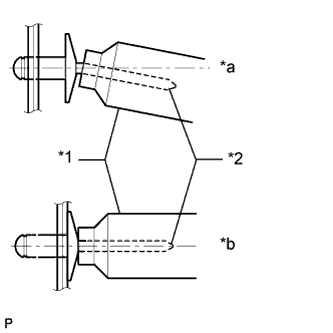
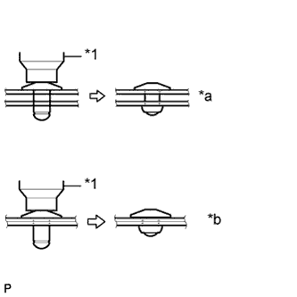

БОКОВОЙ ПОРОГ > ПОВТОРНАЯ СБОРКА |
| 1. УСТАНОВИТЕ ЛАМПУ ОСВЕЩЕНИЯ ПОРОГА В СБОРЕ (для моделей с подсветкой) |
Для 5-дверных моделей:
Установите 2 фонаря и закрепите их 4 болтами.
Для 3-дверных моделей:
Установите фонарь и закрепите его 2 болтами.
| 2. УСТАНОВИТЕ КРОНШТЕЙН ЛАМПЫ ОСВЕЩЕНИЯ ПОРОГА (для моделей с подсветкой) |
Установите наконечник на пневматическое или ручное клепальное устройство.
Вставьте в наконечник оправку новой заклепки.
Используя клепальный молоток, установите кронштейн лампы освещения порога и закрепите его 3 заклепками, как показано на рисунке.
|  |
| *1 | Клепальный молоток |
| *2 | Оправка |
| *a | НЕПРАВИЛЬНО |
| *b | ПРАВИЛЬНО |
 |
| *1 | Клепальный молоток |
| *a | НЕПРАВИЛЬНО |
| *b | ПРАВИЛЬНО |
|  |
| *1 | Клепальный молоток |
| *a | НЕПРАВИЛЬНО |
| *b | ПРАВИЛЬНО |
| 3. УСТАНОВИТЕ ЛАМПУ ОСВЕЩЕНИЯ ПОРОГА В СБОРЕ (для моделей с подсветкой) |
 |
Установите лампу.
Поверните патрон в направлении, указанном стрелкой, чтобы установить его.
| 4. УСТАНОВИТЕ ЖГУТ ПРОВОДОВ ПАНЕЛИ ЛЕВОГО ПОРОГА (для моделей с подсветкой) |
Для 5-дверных моделей:
Введите в зацепление 9 зажимов и установите жгут проводов.
Для 3-дверных моделей:
Введите в зацепление 5 зажимов и установите жгут проводов.
| 5. УСТАНОВИТЕ КРОНШТЕЙН ЛЕВОГО ПОРОГА В СБОРЕ |
Установите наконечник на пневматическое или ручное клепальное устройство.
Вставьте в наконечник оправку новой заклепки.
Используя клепальный молоток, установите кронштейн порогаи закрепите его 3 заклепками, как показано на рисунке.
| *1 | Клепальный молоток |
| *2 | Оправка |
| *a | НЕПРАВИЛЬНО |
| *b | ПРАВИЛЬНО |
|
| *1 | Клепальный молоток |
| *a | НЕПРАВИЛЬНО |
| *b | ПРАВИЛЬНО |
| *1 | Клепальный молоток |
| *a | НЕПРАВИЛЬНО |
| *b | ПРАВИЛЬНО |
| 6. УСТАНОВИТЕ НАКЛАДКУ ПАНЕЛИ ПОРОГА № 2 |
Установите накладку панели порога № 2.
| 7. УСТАНОВИТЕ НАКЛАДКУ ПАНЕЛИ ЛЕВОГО ПОРОГА |
Установите накладку панели порога.
| 8. УСТАНОВИТЕ ПАНЕЛЬ ЛЕВОГО ПОРОГА (для 5-дверных моделей) |
Введите в зацепление 17 захватов, чтобы установить панель порога.
Вверните 3 болта и установите фиксатор.
| 9. УСТАНОВИТЕ ПАНЕЛЬ ЛЕВОГО ПОРОГА (для 3-дверных моделей) |
Введите в зацепление 14 захватов, чтобы установить панель порога.
Вверните 3 болта и установите фиксатор.
| 10. УСТАНОВИТЕ ЭЛЕМЕНТ ЗАЩИТЫ МОЛДИНГА ПОРОГА № 2 |
Установите элемент защиты молдинга порога № 2 и закрепите его 2 болтами.
| 11. УСТАНОВИТЕ КРОНШТЕЙН ЛЕВОГО БОКОВОГО ПОРОГА № 3 |
Установите кронштейн порога № 3 и закрепите его 2 болтами.
| 12. УСТАНОВИТЕ КРОНШТЕЙН ЛЕВОГО БОКОВОГО ПОРОГА № 2 |
Установите кронштейн порога № 2 и закрепите его 2 болтами.
| 13. УСТАНОВИТЕ КРОНШТЕЙН ЛЕВОГО ПОРОГА |
Установите кронштейн бокового порога, зафиксировав его 2 болтами.